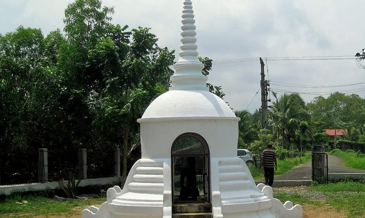

1. Kuttanad Backwaters

2.St.Mary's forane church

3. Krishnapuram Palace

4. Alleppey Lighthouse

5. Alleppey Beach

6. Karumadi


Affectionately nicknamed the 'Venice of the East' by travellers from across the world, Alappuzha is a district of immense natural beauty. Embraced by the Arabian Sea in the west and a network of lakes, lagoons and freshwater rivers criss-crossing it, this backwater country is home toa vibrant animal and avian life. By virtue of its proximity to the sea, the town has always carved out an exclusive place for itself in the maritime history of Kerala.
Renowned for its boat races, beaches, marine products and coir industry, the singularity of this land is the region called Kuttanad. A land of lush paddy fields referred to as the 'Rice Bowl of Kerala', it is one of the few places in the world where farming is done below sea level. This once prosperous trading and fishing centre is nowadays a world renowned backwater tourist destination.
Information Offices:
District Tourism Promotion Council Ph: 2253308 Fax: 2251720, Email: alp_dtpcalpy@sancharnet.in, Website: www.dtpcalappuzha.com
Tourist Information Office, Dept. of Tourism Ph: 2260722
Getting there:
By road: Alappuzha KSRTC Bus Station, Enquiry Ph: +91 477 2252501
By rail: Alappuzha Railway Station, Enquiry Ph: +91 477 2253965
By air: Thiruvananthapuram (150 km) & Nedumbassery, Kochi (88 km)
By water: Alappuzha Boat Jetty, Enquiries Ph: +91 477 2252015; SWTD (public boat service enquiry) Ph: 2252510
Geographical Information
Altitude: Sea level
Area: 1414 sq. km
Population: 2,109,160 (2011 census)